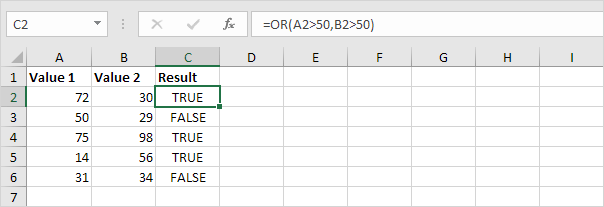

Operator Perbandingan (Comparison Operators)
Sama dengan | Lebih besar dari | Kurang dari | Lebih besar dari atau sama dengan | Kurang dari atau sama dengan | Tidak sebanding dengan
Gunakan operator perbandingan di Excel untuk memeriksa apakah dua nilai sama satu sama lain, jika satu nilai lebih besar dari nilai lain, jika satu nilai kurang dari nilai lain, dll.
Sama dengan (Equal to)
Operator sama dengan (=) mengembalikan TRUE jika dua nilai sama satu sama lain.
-
Misalnya, lihat rumus di sel C1 di bawah ini.

Penjelasan: rumus mengembalikan TRUE karena nilai di sel A1 sama dengan nilai di sel B1. Selalu awali rumus dengan tanda sama dengan (=).
-
Fungsi IF di bawah ini menggunakan operator sama dengan.

Penjelasan: jika dua nilai (angka atau string teks) sama satu sama lain, fungsi IF mengembalikan Ya, jika tidak mengembalikan Tidak.
Lebih besar dari (Greater than)
Operator lebih besar dari (>) mengembalikan TRUE jika nilai pertama lebih besar dari nilai kedua.
-
Misalnya, lihat rumus di sel C1 di bawah ini.

Penjelasan: rumus mengembalikan TRUE karena nilai di sel A1 lebih besar dari nilai di sel B1.
-
Fungsi OR di bawah ini menggunakan operator lebih besar dari.

Penjelasan: fungsi OR ini mengembalikan TRUE jika setidaknya satu nilai lebih besar dari 50, selain itu mengembalikan FALSE.
Kurang dari (Less than)
Operator kurang dari (<) mengembalikan TRUE jika nilai pertama lebih kecil dari nilai kedua.
-
Misalnya, lihat rumus di sel C1 di bawah ini.

Penjelasan: rumus mengembalikan TRUE karena nilai di sel A1 lebih kecil dari nilai di sel B1.
-
Fungsi AND di bawah ini menggunakan operator kurang dari.

Penjelasan: fungsi AND ini mengembalikan TRUE jika kedua nilai kurang dari 80, selain itu mengembalikan FALSE.
Lebih dari atau sama dengan (Greater than or equal to)
Operator lebih besar dari atau sama dengan (>=) mengembalikan TRUE jika nilai pertama lebih besar dari atau sama dengan nilai kedua.
-
Misalnya, lihat rumus di sel C1 di bawah ini.

Penjelasan: rumus mengembalikan TRUE karena nilai di sel A1 lebih besar atau sama dengan nilai di sel B1.
-
Fungsi COUNTIF di bawah ini menggunakan operator yang lebih besar atau sama dengan.

Penjelasan: fungsi COUNTIF ini menghitung jumlah sel yang lebih besar atau sama dengan 10.
Kurang dari atau sama dengan (Less than or equal to)
Operator kurang dari atau sama dengan (<=) mengembalikan TRUE jika nilai pertama lebih kecil atau sama dengan nilai kedua.
-
Misalnya, lihat rumus di sel C1 di bawah ini.

Penjelasan: rumus mengembalikan TRUE karena nilai di sel A1 kurang dari atau sama dengan nilai di sel B1.
-
Fungsi SUMIF di bawah ini menggunakan operator kurang dari atau sama dengan.

Penjelasan: fungsi SUMIF ini menjumlahkan nilai dalam rentang A1:A5 yang kurang dari atau
sama dengan 10.
Tidak sebanding dengan (Not Equal to)
Operator tidak sama dengan (<>) mengembalikan TRUE jika dua nilai tidak sama satu sama lain.
-
Misalnya, lihat rumus di sel C1 di bawah ini.

Penjelasan: rumus mengembalikan TRUE karena nilai di sel A1 tidak sama dengan nilai di sel B1.
-
Fungsi IF di bawah ini menggunakan operator tidak sama dengan.

Penjelasan: jika dua nilai (angka atau string teks) tidak sama satu sama lain, fungsi IF mengembalikan Tidak, jika tidak mengembalikan Ya.